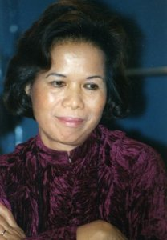

Giới Thiệu Tác Giả

ên thật Vũ Thị Tuệ, sinh ngày 9 tháng 8 năm Giáp Thân tức ngày 25 tháng 9 năm 1944 tại nguyên quán làng Doanh Châu, huyện Hải Hậu, tỉnh Nam Định. Tháng 10/1954, theo gia đình di cư vào Nam. Học Tiểu học tại trường Ngô Sĩ Liên, Hà Nội và tiếp theo là trường Bàn Cờ, Sài Gòn. Học Trung học tại các trường Văn Lang, Tao Đàn và Gia Long, Sài Gòn. Tháng 9/1962 sang Pháp du học. Học dự bị thi vào Grandes Ecoles.
Từ 1987, chuyên viết tiểu luận phê bình văn học trên các báo Văn Học, Hợp Lưu, Thế Kỷ 21, …
Từ tháng 12/1990 đến tháng 3/2009, cộng tác với đài RFI (Radio France Internationale), phụ trách chương trình Văn Học Nghệ Thuật.
Tác phẩm đã xuất bản:
- Cấu Trúc Thơ, Văn Nghệ, California, 1995
- Sóng Từ Trường, Văn Nghệ, California, 1998
- Nói chuyện với Hoàng Xuân Hãn, và Tạ Trọng Hiệp, Văn Nghệ, California, 2002
- Sóng Từ Trường II, Văn Nghệ, California, 2002
- Sóng Từ Trường III, Văn Mới, California, 2005
- Nhân Văn Giai Phẩm và vấn đề Nguyễn Ái Quốc, Tiếng Quê Hương, Virginia, 2012.
Dịch:
- Mademoiselle Sinh (Nàng Sinh), với sự cộng tác của Marion Hennebert, tập truyện ngắn của Nguyễn Huy Thiệp, Aube, France, 2010.
- Crimes, amour et châtiment, tuyển tập truyện ngắn của Nguyễn Huy Thiệp, hiệu đính và chú thích toàn bộ; dịch một phần với sự cộng tác của Marion Hennebert, Aube, France, 2012.

MỤC LỤC
Tựa
Chương 1: Tìm hiểu phong trào Nhân Văn Giai Phẩm
Chương 2: Lịch trình Nhân Văn Giai Phẩm
Chương 3: Giai Phẩm Mùa Xuân
Chương 4: Nguyên nhân đưa đến cuộc cách mạng mùa thu của tư tưởng
Chương 5: Nội bộ báo Nhân Văn
Chương 6: Trí thức và dân chủ tại Việt Nam trong thế kỷ XX Từ Phan Châu Trinh, Hoàng Đạo đến NVGP
Chương 7: Biện pháp thanh trường
Chương 8: Thụy An (1916-1987)
Chương 9: Nguyễn Hữu Đang (1913-2007)
Chương 10: Lê Đạt (1929-2008)
Chương 11: Trần Dần (1926-1997)
Chương 12: Hoàng Cầm (1922-2010)
Chương 13: Văn Cao (1923-1995)
Chương 14: Phùng Cung (1928-1998)
Chương 15: Cuộc cách mạng hiện đại đầu thế kỷ XX
Chương 16: Nguyễn Tất Thành
Chương 17: Hội Đồng Bào Thân Ái – Phong trào ái quốc đầu tiên tại Pháp
Chương 18: Nguyễn Ái Quốc, lai lịch và văn bản
Chương 19: Khảo sát văn bản Nguyễn Ái Quấc/Quốc
Chương 20: Vì sao Phan Châu Trinh phó thác “đại sự” cho Phan Khôi?
Chương 21: Phan Khôi (1887-1959)
Chương 22: Vụ án Nam Phong
Chương 23: Nguyễn Mạnh Tường (1909-1997)
Chương 24: Une voix dans la nuit: Cải cách ruộng đất và Cải tạo tư sản
Chương 25: Une voix dans la nuit: Vấn đề trí thức và Độc tài đảng trị
Phụ Lục
Trò chuyện với người trong cuộc
- Với nhà cách mạng Nguyễn Hữu Đang
- Với nhà thơ Lê Đạt
- Với nhà thơ Hoàng Cầm
- Với họa sĩ Trần Duy
Thư mục